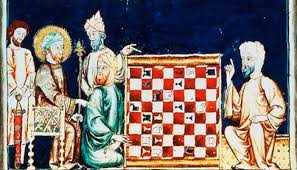

juego, tal como se conoce actualmente, surgió en Europa durante el siglo XV, como evolución del juego persa shatranj, que a su vez surgió a partir del más antiguo chaturanga, que se practicaba en la India en el siglo VI. La tradición de organizar competiciones de ajedrez empezó en el siglo XVI.
